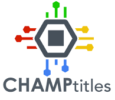
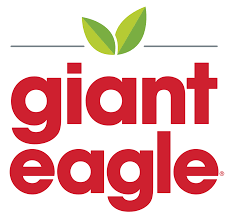

Oriana Zup
Contact
Home Address: Novelty, OH
School Address: Chicago, IL
Email: ozup@hawk.iit.edu
Skills
Coordination
Critical Thinking
Complex problem Solving abilities
Advanced mathematical abilities
Microsoft Office
Eclipse IDE Environment
IntelliJ Environment
Visual Studio Code
Salesforce Marketing Cloud
HTML
Amp script
Python
CSS
SQL
C (Programming Language)
Summary
Knowledgeable student with experience in a work environment, the customer service industry, and multiple coding environments and languages, that is able to get the job done while paying close attention to detail.
Work Experience
Front-End Developer Intern
Marcus Thomas LLC | Internship | Dec 2023 - Present
Assist development team in creating, maintaining and testing web applications

Salesforce Marketing Cloud Intern
Devs United | Internship | May 2023 - Aug 2023
Worked Independently and with a Team to create html emails email using Salesforce Marketing Cloud, incorporating personalization. Successfully troubleshot and adapted code for all different email clients. Strengthened my knowledge in marketing cloud Areas. Completed projects in SQL.
Salesforce Marketing Cloud Intern
Devs United | Internship | May 2022 - Aug 2022
Worked with a team to create and build emails using Salesforce Marketing Cloud for a client. Also completing independent tasks to strengthen my knowledge of Journeys, Automations, Landing Pages/Microsites, and Data Extensions/Lists with the marketing cloud.
Software Engineer Intern
CHAMPtitles | Internship | May 2021 - Aug 2021
Using Spring Boot Java and React Javascript, I built a new portal for Champ's Digital Total Loss application. The portal serves as a place to perform administrative tasks for the application, such as onboarding new clients and creating new users.
Bakery Clerk
Giant Eagle | Part-time | Jun 2019 - Feb 2021
Packaged all products, to ensure customers had everything available, as well as worked with customers, to create a cake design to fit their function.
Volleyball Coach
Eastside Cleveland Juniors Volleyball | Part-time | May 2021 - Aug 2021
Coached individuals between the ages of 8 and 11 on volleyball techniques as well as developed training and exercise programs to meet individual requirements and team play strategies.
Communications Intern
NASA Glenn Research Center | Internship | May 2021 - Aug 2021
Worked closely with a mentor, to collect and organize data from a Satellite so that it could be easily accessible and performed calculations to find the optimal positioning for the Satellite relative to the sun.
Education
Hawken School
High School Diploma | 2016-2020
Illinois Institute of Technology
Bachelor's Degree in Computer Science | 2020-Present
Personal Projects
Minecraft Plugin Development
Self-taught to create unique Minecraft Java edition plugins. Created a plugin to successfully run a unique game within Minecraft for other players to use during a competition.
Minecraft Competition Creator
Worked with a team of other creators, to build and code over 10 unique games for a competition. Worked closely with another person, to add existing plugins and create custom plugins, to have smooth and interesting visuals.
Volunteering
Women Safe Resale Shop
Sorted through donated items from the community, to either give items to the Women Safe Shelter, or put out for sale to raise funds for the shelter